Case study 1.2 Funeral Guide & Arranger 2015–2021
Design for a difficult moment,
and the team built to do it.
Funeral Guide helps recently bereaved families find and compare funeral directors. Arranger is the software those funeral directors run their businesses on. I joined as the first designer in 2015. Over the next five years I defined the brand and product direction for both, built a multi-disciplinary design team of ten, and kept my hands in the front-end code the whole way through.
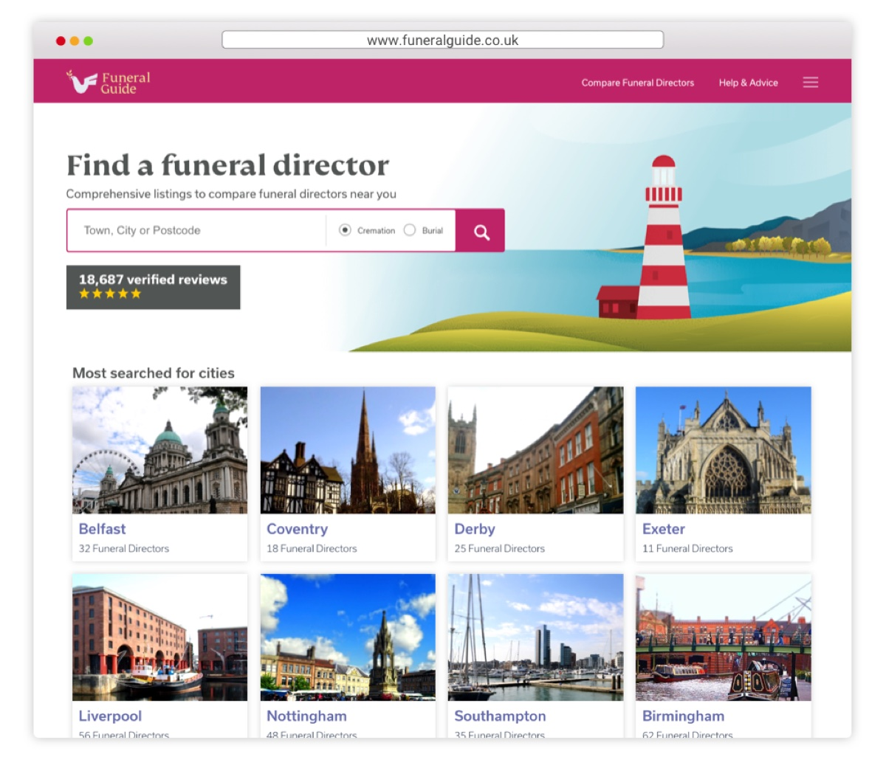
Two products, two audiences
One company serving both sides of a market that had barely been touched by good software: families arranging a funeral, and the funeral directors arranging it for them.
A marketplace and the software behind it.
Funeral Guide grew into the UK's most popular funeral director comparison site, with comprehensive pricing and verified independent reviews. Its users arrive at the worst week of their lives, often at night, on a phone, with no idea what a funeral costs or who to call.
Arranger came later. In 2017 we recognised that most funeral arrangement software was dated, unintuitive and making poor use of modern technology. So we built our own: a SaaS product that can run a funeral director's entire business, from the first call to the final invoice.
Designing for both sides meant the two products had to speak to each other, in brand as much as in data. The families' product is warm and reassuring. The professionals' product is calm and efficient. Both are unmistakably from the same house.
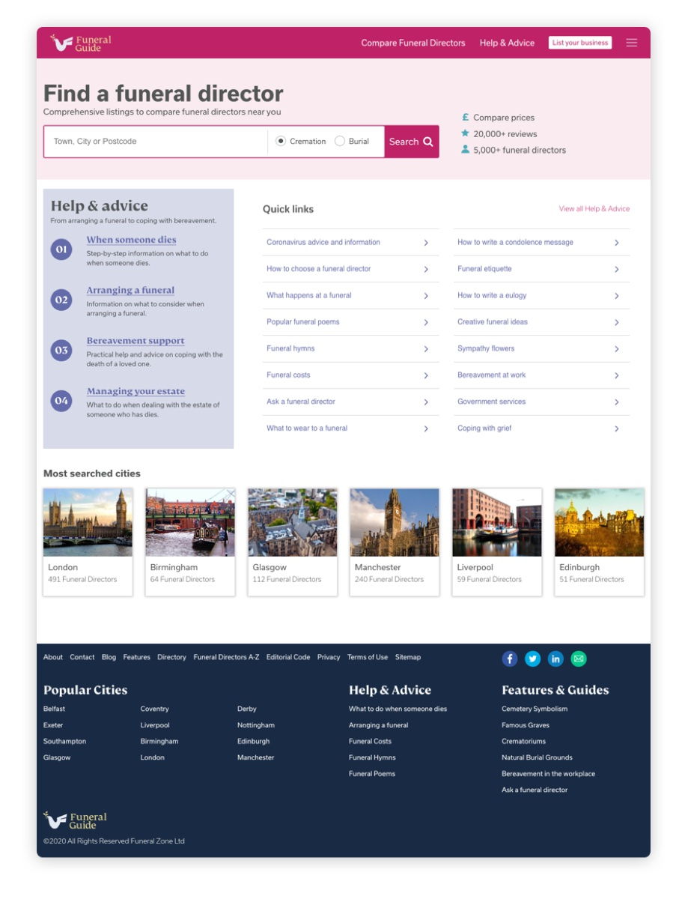
First designer in, ten designers later
The company hired me to design. What it needed within a year was a design function. Building one became the job.
Growing a team the products could lean on.
By 2020 the team was ten people across UX and UI design, graphic design, illustration and HTML/CSS, working in agile squads alongside the engineering teams. I hired for the mix deliberately. A marketplace for the public and a workhorse for professionals need different instincts, and a team that can illustrate, write and build as well as wireframe gets to a shipped answer faster.
What held it together was written down: brand guidelines for both products, a documented design system, and HTML and SCSS coding standards so that design and engineering shared one vocabulary from Figma through to the pull request. Comprehensive handovers were the norm, but so was sitting with an engineer and finishing the front end together.
- Direction. Brand and product direction for Funeral Guide and Arranger, and the vision and strategy conversations with the founders that set them.
- Practice. Design system, component library, HTML/SCSS guidelines, review and handover rituals.
- People. Hiring, mentoring and growing designers in their roles, from graduates to seniors.
- Craft. Still designing and still shipping code, which kept the standards honest.
As a design leader I love to share my experience and use the opportunity to mentor and help other designers flourish within their roles.
Funeral Guide
A brand from scratch, then a marketplace with two sets of users whose interests did not always align.
A brand for a subject nobody wants to search for.
The funeral sector's visual language was black, grey and Gothic. Funeral Guide needed to feel trustworthy without feeling grave. The mark is a dove carrying an olive branch, set beside a warm serif wordmark, and the palette runs deep pink against navy with a gold accent. Illustration did a lot of the work: landscapes and lighthouses instead of coffins and lilies.
The brand extended into a design system and front-end guidelines that the whole team built against, which is how a growing site kept one voice.
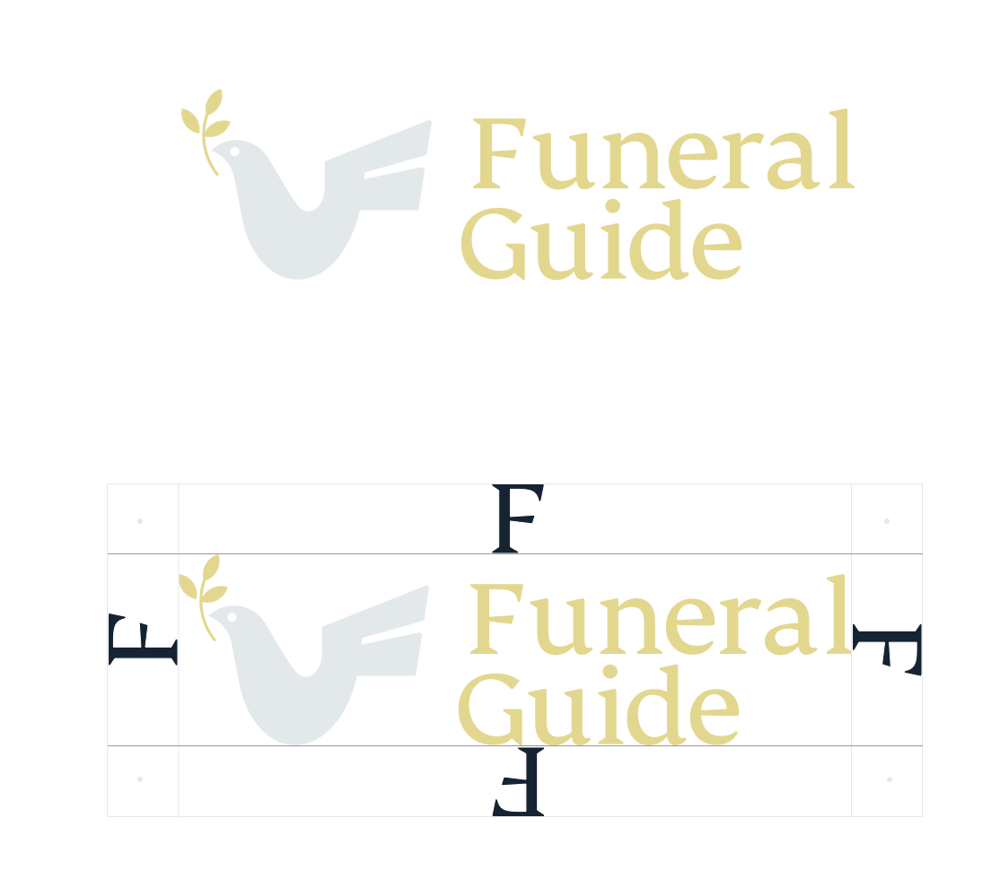
Reviews and pricing, without losing the other side.
Listings are the heart of Funeral Guide, and we introduced two things the sector had never shown the public: verified reviews and prices. Both help a family make an informed choice at a moment when they have little energy to research. I led the design and the front-end implementation of both.
Neither would have survived without the funeral directors, who feared what a bad review or a visible price might do to a reputation built over generations. We worked closely with them to mitigate those concerns: how reviews are verified and presented, how estimates are labelled, what a listing lets a business say about itself. Designing the compromise was as much the product work as designing the screens.
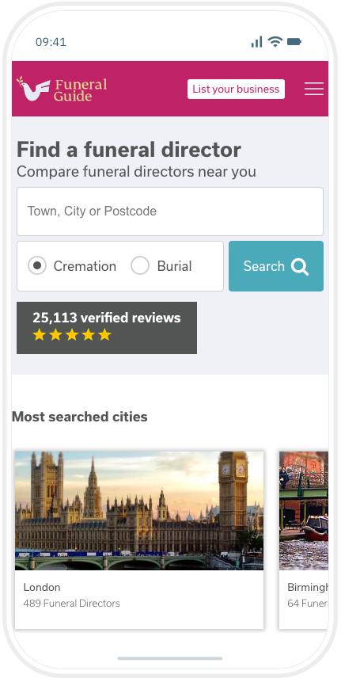
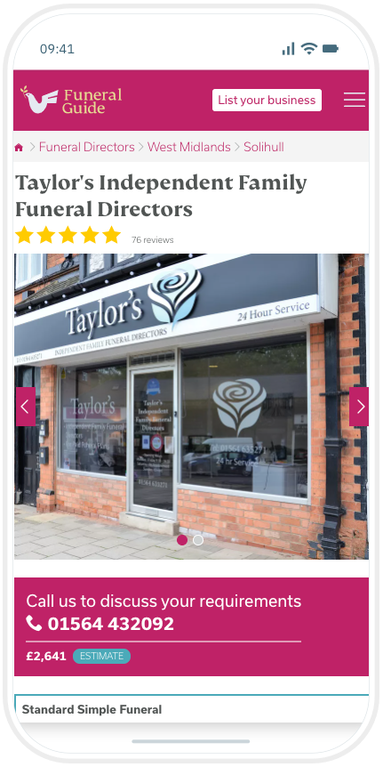
Showcase: giving funeral directors a reason to be transparent.
Pricing transparency worked better as something a funeral director owned than something done to them. Showcase was an online brochure, built for each business by our team in a matter of days, that presented their packages, products and prices to families on any device. It gave the businesses a stake in the openness the marketplace was asking of them, and it became the seed of what Arranger would offer families later.
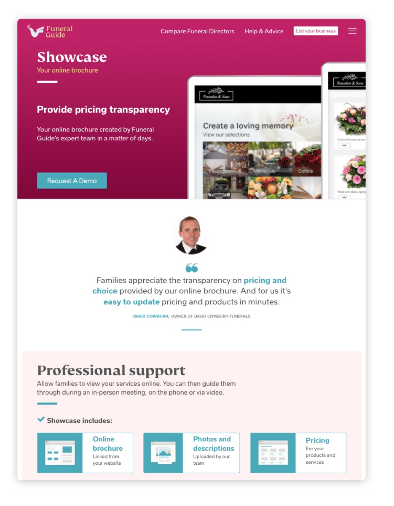
Arranger
A B2B product led from concept to launch and beyond: brand, design system, interface, and a fair share of the code.
Arranging a funeral is surprisingly complicated.
A single funeral touches venues, vehicles, officiants, coffins, flowers, notices, donations, paperwork and payments, with dates and times that all depend on each other. The software funeral directors were using for this was dated and unintuitive. Arranger set out to run the whole business, and to do it in a way that staff could pick up without a training course.
I led the design from concept to launch. We launched deliberately as an MVP in 2019 and spent the next twelve months making continual updates and iterations from user feedback. The UX aim was simple to state and hard to do: let users complete their tasks with maximum efficiency and still enjoy using the thing.
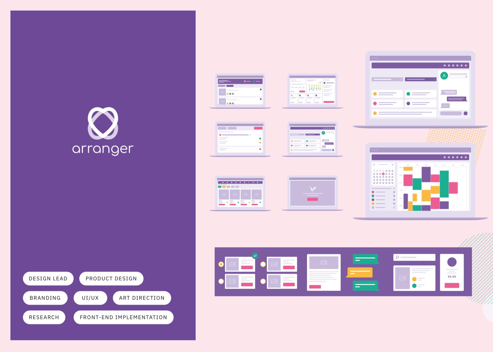
A design system built for reuse, not for one screen.
Every pattern in Arranger was broken down into simple components, considered holistically so they would be reusable rather than context-specific. The funeral card and the date scroller below are typical: specified in the same spacing units the SCSS used, with the rules an engineer needs and nothing they don't.
That documentation, with comprehensive handovers to the development team, is what kept a fast-growing product consistent and gave it a clear identity, even as several squads worked on it at once.
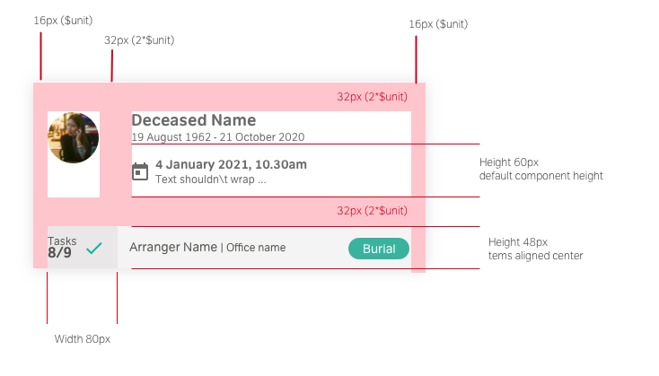
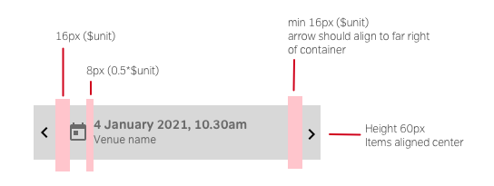
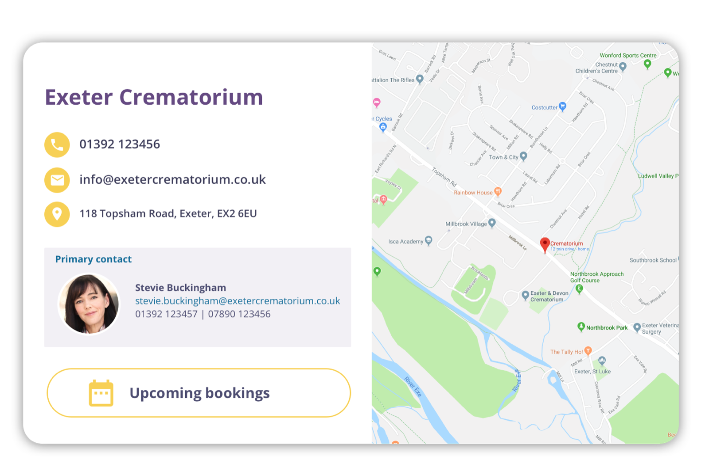
Showcase by Arranger: the catalogue on the family's side of the table.
Funeral directors present coffins, vehicles, flowers and packages to families in person. Arranger's catalogue puts that on a tablet, with photographs and prices, so a family can browse while the arranger talks, and an estimate is generated at the touch of a button. When lockdown arrived, the same feature let families browse on their own device while the arranger presented from a safe distance.
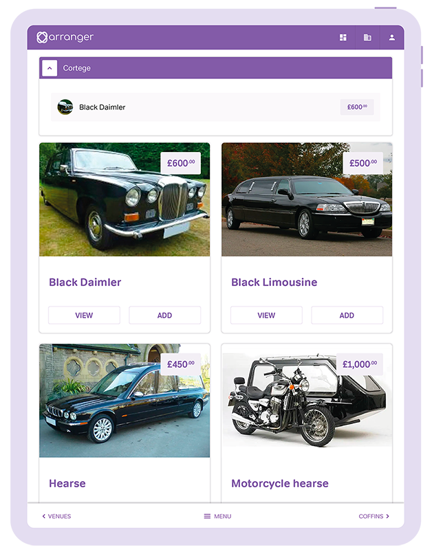
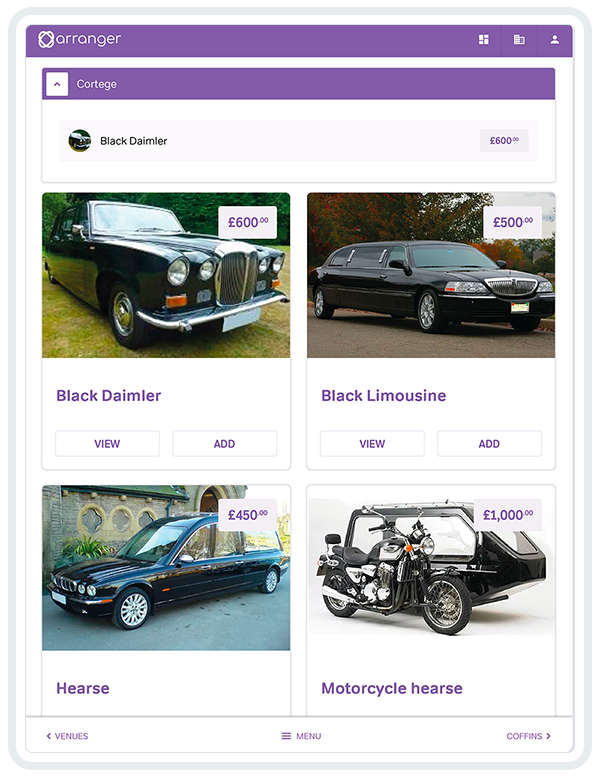
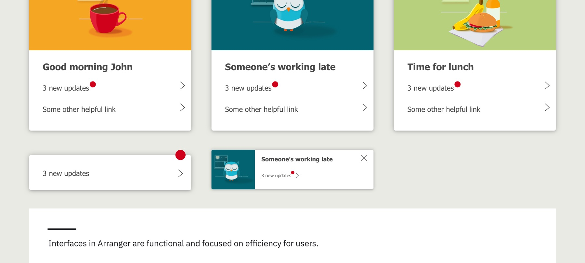
Art direction and marketing
Working with the sales and marketing teams, I art-directed how both products were shown to the world, from the website to trade press.
Let the funeral directors say it.
Funeral directors trust other funeral directors. The Arranger campaign put real customers on the page, photographed against the brand's soft geometry, with one line: "Arranger works for me." The website carried the same illustration language as the product, and when the pandemic changed how funerals were arranged, a new landing page and the Showcase feature answered it within weeks.
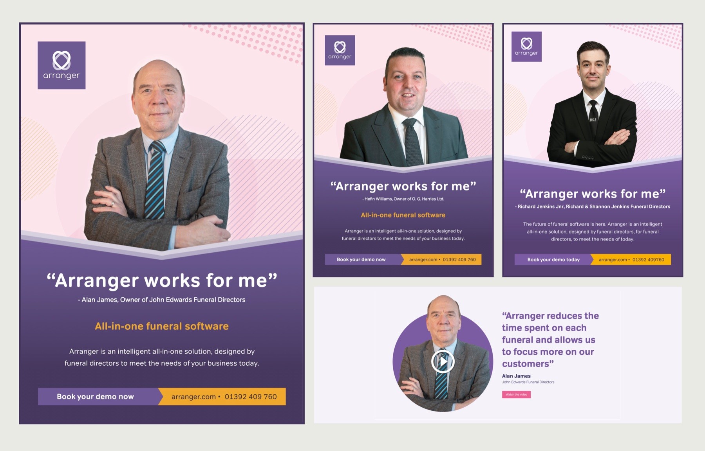
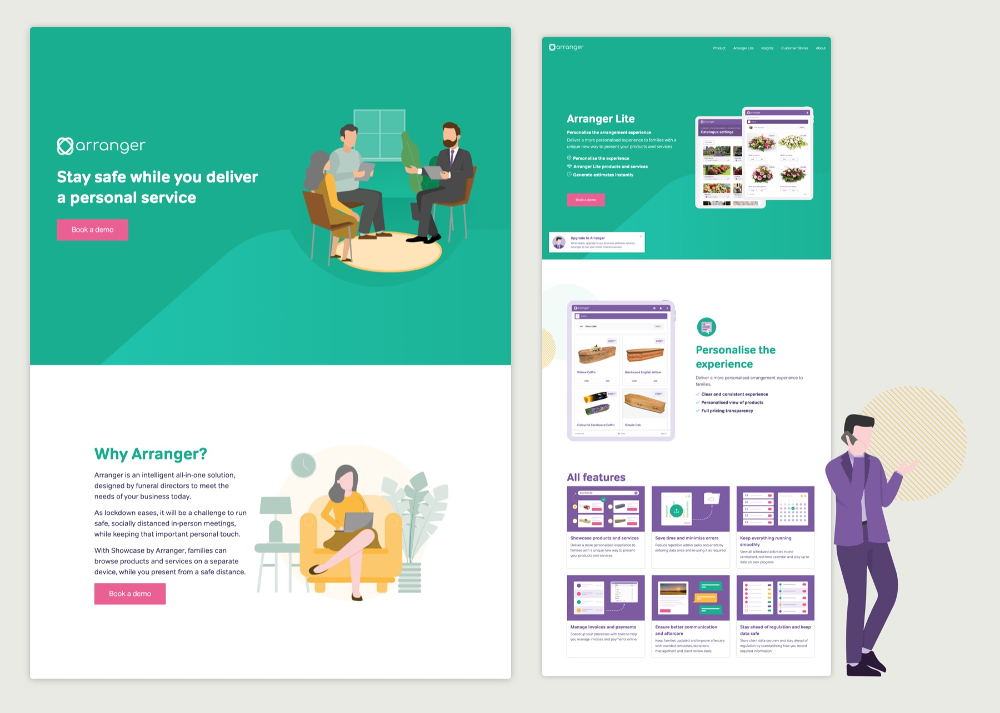
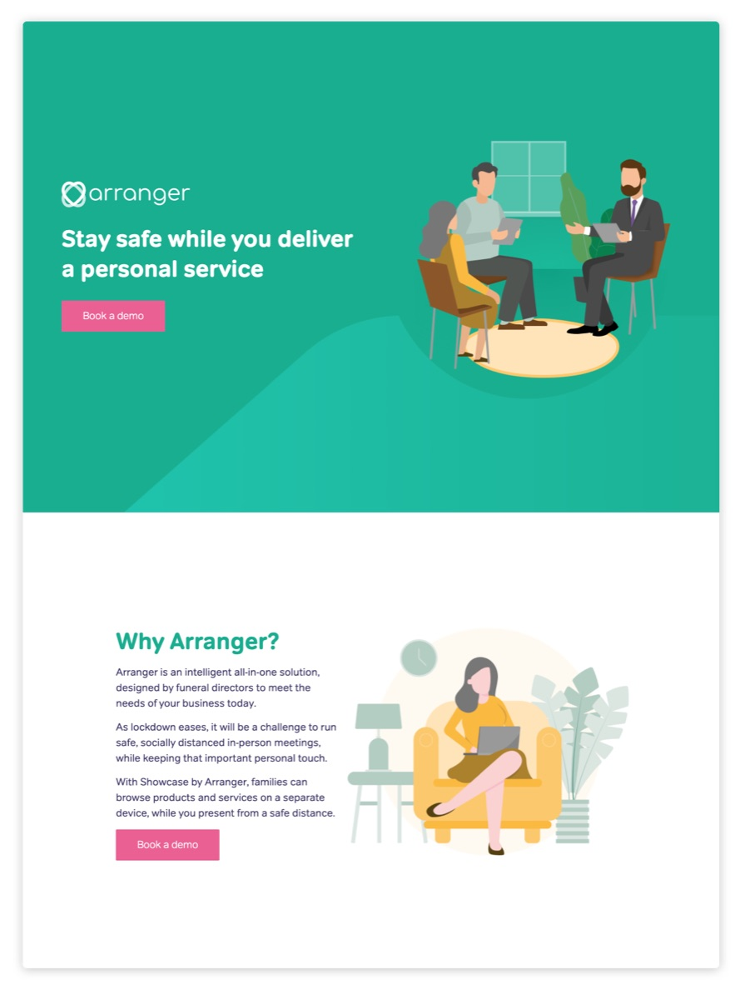
Arranger reduces the time spent on each funeral and allows us to focus more on our customers.
What this shows
A design function from zero.
One designer to ten, with the systems, standards and habits that let a team ship consistently across two products and several squads.
Two brands, two audiences, one house.
Brand and product direction for a consumer marketplace and a professional SaaS tool, each right for its users and recognisably related.
Product work, not just screens.
Reviews and pricing negotiated with the businesses they affected. A product launched as an MVP and iterated for a year. Front end written alongside the engineers.